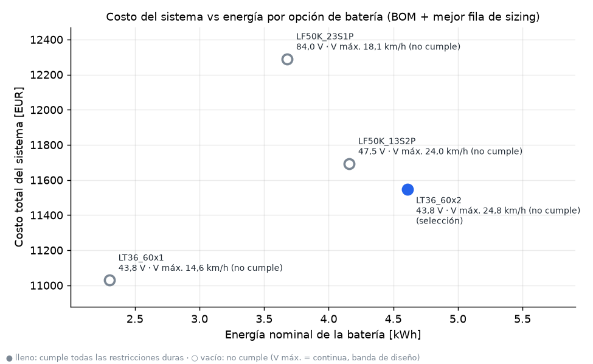
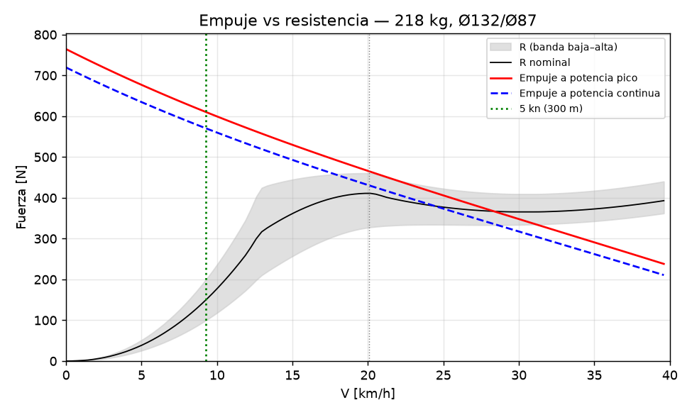
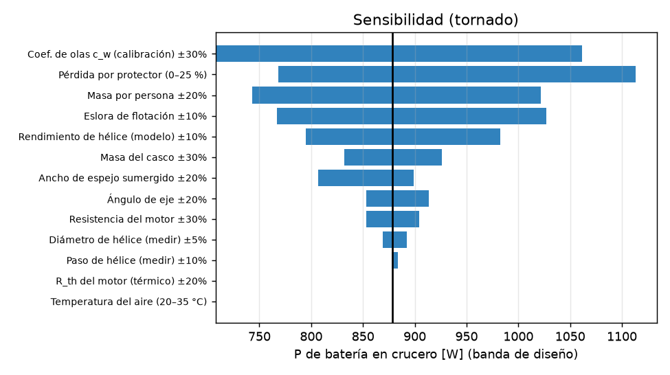

Documentos
Documentación del proyecto
Los mismos archivos Markdown del repositorio, renderizados. Los números entre marcadores se regeneran desde los resultados.
Empezar aquí
- P1-J — Waterjet eléctrico inboard para el jet boat de Jorge (2,30 m)README.mdQué es: el waterjet que pidió Jorge, rediseñado para que funcione: toma enrasada entera a proa del impulsor (su comentario: la rejilla del plano estaba detrás), rampa de 27°,…
- PENDIENTES_GASPAR — lo que hay que hacer en el mundo físico, en ordenPENDIENTES_GASPAR.mdCada ítem tiene un criterio de cierre. No se pasa al bloque siguiente con uno abierto, salvo que se diga lo contrario. Después de cada medición: cargar el valor en inputs.yaml…
- Checklist de salida — waterjet eléctrico (jet boat de Jorge, Als)checklist_salida.mdCasilla sin marcar = no se sale. Una sola vez antes: T0–T2 aprobados y bloqueo H-1 (estabilidad) cerrado (06 §5, §8).
Memoria técnica
- 01 — Investigación: waterjet eléctrico inboard para el jet boat de Jorge01_investigacion.mdResumen de lo que se aprendió, con la fuente de cada dato. El detalle y los links están en research/: R10a (toma), R10b (auditoría del plano), R11 (componentes y precios), R12…
- 02 — Memoria de cálculo del waterjet (sizing.py)02_calculos.mdLectura honesta. Con 218 kg, el casco leído del plano y la batería que cumple ≤ 50 V, el modelo no asegura que el bote planee. El margen de empuje se exige de 0 hasta el planeo…
- 03 — Arquitectura: qué propulsión para el jet boat de Jorge03_arquitectura.mdPuntajes de 1 a 5 [SUPUESTO, justificados abajo]. Sensibilidad: cada peso ±50 % y Monte Carlo de 20 000 juegos de pesos (Dirichlet alrededor de los nominales) [CALCULADO:…
- 05 — Fabricación del waterjet P1-J: qué se hace cómo, impresión, mecanizado, soldadura, CNC, anodizado y ensayos05_fabricacion.mdEl jet es casi todo metal. De 65 tipos de pieza, solo cinco son impresas en PETG (tapa de inspección P1-INT-04, base y capota del controlador P1-ELE-01/02, caja de palancas…
- 06 — Ensamblaje y pruebas del waterjet06_ensamblaje_y_pruebas.mdReglas que valen para todo el documento R1. La estabilidad va primero. El ensayo de escora T1.1 (R13 §5, E1) se hace con el casco SIN cortar y lastre equivalente, antes de…
- 07 — Roadmap P2: qué mejorar después del prototipo07_roadmap_P2.mdDisparador: E1 falla (escora > 15° con el piloto a 0,2 m de crujía, o entra agua) o el GM medido con la prueba de inclinación queda < 100 mm [SUPUESTO: criterio de R10b H1]. Qué…
Diseño, FEA y electrónica
- 04 — Diseño detallado (waterjet P1-J)04_diseno/README.mdDiseño CAD del waterjet P1-J: lista de piezas, verificación de interferencias y exportes STEP/STL.
- FEA de las piezas críticas del waterjet — P1-DRV-03, P1-REV-01, P1-STE-01, P1-INT-02, P1-CTL-0204_diseno/fea/README.mdFEA lineal elástico 3D de las piezas más cargadas del waterjet eléctrico inboard: el pórtico de rodamientos que baja el empuje del tren a la placa base (DRV-03), el bucket de…
- 04_diseno/electronica — Electrónica, cadena de seguridad y control de P104_diseno/electronica/README.mdRegenerar: python 04_diseno/electronica/calc_electronica.py && python 04_diseno/electronica/diagrama_cableado.py (no están en run_all.py: ver §11).
Decisiones y auditoría
- Registro de decisiones y supuestos — P1-J (waterjet del jet boat de Jorge)decisiones.mdD-01 Cambio de arquitectura: de cola larga para un jon boat a waterjet eléctrico inboard para el jet boat de Jorge. Alternativas: seguir con la cola larga (2 personas, 6 km/h);…
- Auditoría adversarial — P1-J waterjet (Pasada 3)auditoria.mdMétodo: auditores independientes por área (cálculo/física, CAD/estructural, BOM/eléctrico/legal, documentos) que intentan refutar el paquete leyendo código y recalculando a mano;…
Investigación (research/)
- R01 — Videos de referencia V1 y V2 (canal "Clean Energy", @cleanenergy6271)research/R01_videos.mdLeyenda de etiquetas [VERIFICADO: url]: texto o dato leído en esta sesión (descripción, pista ASR, comentario, ficha técnica). [VERIFICADO-visual: url, ~mm:ss]: observado en el…
- R02 — Proyectos comparables: fueraborda impresos, conversiones de trolling motor, long-tail / surface drive eléctricosresearch/R02_proyectos_outboard.mdRelevancia para P1: A = alta, M = media, B = baja. "Agua": S = salada o salobre, D = dulce, ? = no declarada.
- R03: proyectos comparables (waterjets impresos, toberas y protectores, rim-driven, eFoil DIY y papers de hélices FDM)research/R03_proyectos_jet_ducted_efoil.mdAlcance: proyectos reales y papers que sirven para decidir entre tres opciones: la cola larga de P1 (motor seco arriba, correa HTD-5M, eje 316 inclinado, hélice comercial de…
- R04 — Jon boats de aluminio < 2,5 m y referencias comerciales (trolling motors / fueraborda eléctricos)research/R04_bote_y_referencias.mdCasi no existen jon boats de aluminio < 2,5 m en catálogos actuales. Los modelos más chicos de Tracker, Lowe, Alumacraft, Princecraft y Marine (CZ) miden 3,0–3,1 m [VERIFICADO:…
- R05: materiales FDM en agua salobre y selladoresearch/R05_materiales_sellado.mdAlcance. Parte A (materiales): PETG, ASA, PC y PC-blend, PA-CF y PETG-CF, y recubrimiento epoxi, impresos en una Ender-3 S1 (≤260 °C, sin cerramiento) para servicio en agua…
- R06 — Eléctrica: BLDC / ESC (VESC) / kill switch / baterías / normas / corrosión galvánicaresearch/R06_electrica.mdProyecto P1: propulsión eléctrica, mini lancha de aluminio tipo jon boat (< 2,5 m), Als Fjord (Sønderborg). Fecha de la investigación: 2026-10-01. Etiquetas: [VERIFICADO: url] =…
- R07 — Normativa danesa + condiciones de Als Fjord / Als Sund / Flensborg Fjordresearch/R07_dinamarca.mdNo hay prohibición general encontrada; el requisito es luces (Regla 23(d)). Con agua < 15 °C la mayor parte del año (§3) y sin forma de ser visto, política del proyecto: solo de…
- R08a — Sourcing BOM eléctrica con envío a Dinamarcaresearch/R08a_bom_electrica.mdProyecto P1 (cola larga eléctrica, jon boat < 2,5 m, Als Fjord). Fecha de consulta de todos los precios: 2026-10-01. Etiquetas: [VERIFICADO: url] = página abierta en esta sesión…
- R08b — Sourcing de la BOM mecánica con envío a Dinamarca (cola larga eléctrica P1)research/R08b_bom_mecanica.mdMétodo y límites. El cupo de WebSearch de la sesión estaba agotado, y Bing/DDG/Brave/Mojeek devolvían bloqueos o basura. Por eso fui directo a los buscadores y API de cada…
- R09 — Métodos de cálculo para sizing.py: resistencia de casco plano, hélice B-series, cavitación, toberas, ejes y térmicoresearch/R09_metodos.mdLimitación: el cupo de WebSearch de la sesión estaba agotado desde el principio. Por eso todo se buscó con URLs directas: Wikipedia en texto crudo, el sitio de la ITTC,…
- R10a: la toma (succión) del waterjet de Jorge. ¿Está muy atrás?research/R10a_toma_waterjet.mdObjeto: referencias/2026-09-26_plano_preliminar_waterjet_jorge.png, rotulado "PLANO PRELIMINAR – WATERJET PARA JET BOAT 2.30 m". Datos del rótulo: escala 1:10, mm, 26/09/2026,…
- R10b — Auditoría técnica del plano preliminar de waterjet de Jorge (26/09/2026)research/R10b_auditoria_plano_jorge.mdAlcance. Este informe revisa todo el plano menos la toma, que analiza otro agente. Sobre la toma, una sola línea: Jorge tiene razón. En la vista lateral, la rejilla queda a ~140…
- R11 — Componentes comprables para el waterjet inboard de Jorge (motor, ESC, batería, bomba, tren, auxiliares)research/R11_componentes_jet.mdMonedas (tipos del proyecto, R08a §0): 1 EUR = 7,4755 DKK; 1 USD = 0,8807 EUR; 1 GBP = 1,1701 EUR (0,85463 GBP/EUR). Para CAD no hay tipo del proyecto: uso el BCE del 2026-10-01,…
- R12 — Métodos para dimensionar el waterjet inboard (impulsor, estator, tobera, toma, cavitación, planeo, cargas)research/R12_metodos_waterjet.mdProyecto (nuevo alcance): waterjet inboard eléctrico para un jet boat de 2,30 × 0,80 m, 1 piloto, Δ = 150–230 kg, 5 kW continuos / 7,2 kW máx., impulsor axial Ø108 a ~4500 rpm,…
- R13 — Marco legal y normativo del jet boat eléctrico de Jorge (2,30 × 0,80 m, waterjet inboard; motor de 18,8 kW de catálogo limitado por configuración a ≈ 6,5 kW pico en el eje, 43,8 V)research/R13_legal_jet.mdYa verificado y que no se repite aquí: el límite de 5 kn a menos de 300 m de la costa (R07 §1.2); los chalecos (BEK 765/2024 §5, R07); el umbral de 19 kW y la definición de…
Figuras del cálculo
Generadas por sizing.py y bom.py; explicadas en 02 — cálculos.



